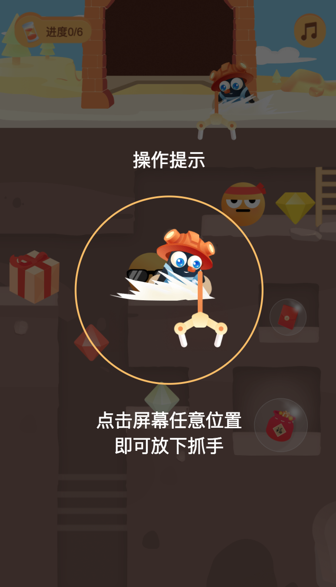
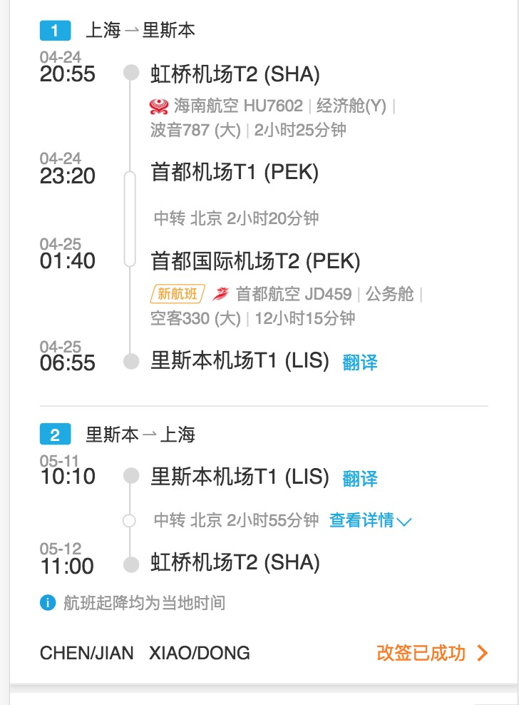
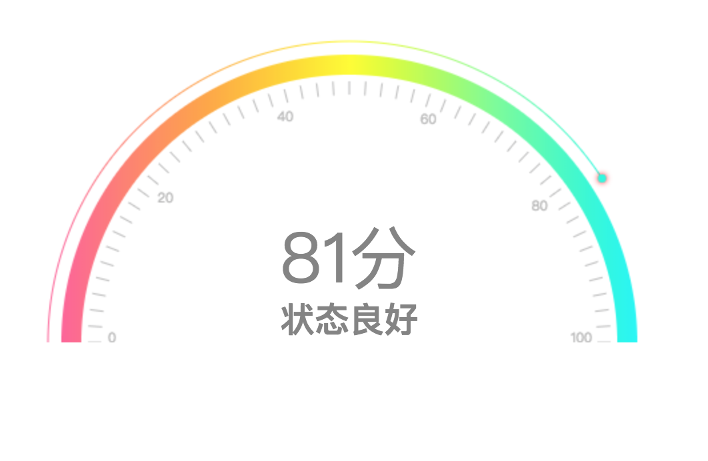

刘云钊
男| 未婚| 1991年6月生| 户口：江苏-泰州| 现居住于:上海4年工作经验|
15261019417
E-mail：lyz1051500917@163.com
-
求职意向
-
- 工作性质：全职
- 期望职业：WEB前端开发
- 期望行业：计算机软件、互联网/电子商务
- 工作地区：南京
- 目前状况：在职
-
自我评价
-
工作经历
-
2018/5 --至今
简书|高级前端开发
行业类别： 创作 |企业性质：民营 |规模：100-200人
工作描述： 负责简书app的模块开发,小程序，以及vue-ssr向nuxt的改版，以及抓钻游戏开发 https://www.jianshu.com/mobile/campaign/game
离职原因：个人生活，家庭定居规划
2017/10 --2018/5
上海携程旅行|高级前端开发工程师 T13
行业类别： OTA |企业性质：民营 |规模：10000人
工作描述： 负责开发机票订单详情的开发，航班卡片的重构, 首屏渲染优化，jest单元测试（数据处理部分）
离职原因：

个人职业的规划
2016/05 --2017/10
北京闪银奇异科技有限公司|前端开发工程师
行业类别： 信托/担保/拍卖/典当 |企业性质：民营 |规模：500-999人,前端50人
工作描述：
负责移动端项目的开发，手下管理2个人
技术栈是vue1，vue2，react
构建工具是webpac1 webpack2，gulp离职原因：
个人感情原因回上海。2015/07 -- 2016/04
扬州网畅智城公司北斗软件|前端工程师
行业类别： 互联网/电子商务
工作描述：
主要负责网站效果图的设计（手机端和pc端）以及网站前端页面DIV+CSS重构及优化、javascript和jQuery 脚本的嵌入以及动态效果的设计。离职原因：
技术发展以及个人感情原因去北京了。 -
项目经验
-
2017/05 -- 2017/06
现金卡
责任描述：
负责架子搭建以及页面编写
项目简介：
采取react+react-routerv4+redux,后来个人转为mobx版本(由于觉得mobx更加方便)
项目线上地址:http://xjk.chaojishebaoka.com/#/index2016/11 -- 2017/02
美窝租房
责任描述：
参与项目一期开发，负责其中订阅，消息模块
技术栈：vue1，vuex1，vue-router1项目简介：
项目地址：http://renthouse.wecash.net/#!/index
公众号:美窝租房2016/09 --2017／10
超级社保卡
责任描述：

本项目是vue的单页面应用，属于产品，采用vue+vuex，微信，安卓，IOS三短共用h5页面，本人负责其中的主流程以及搭架子，并对整个项目进行升级
整个项目是爬虫，后台，前端三端并进的，目前城市暂时支持北京
社保评分项目简介：
社保卡项目地址：http://mshebao.wecash.net/#/index,微信公众号：超级社保卡
2016/08 -- 2016/10
闪银前端重构
责任描述：
负责项目的es6重构,项目简介：
项目地址:m.wecash.net/wep/index.html2015/07 -- 2016/4
扬州时期
责任描述：
利用jq，zepto写一些静态页面 -
教育经历
-
2010/09 -- 2014/06
南京师范大学泰州学院| 生物工程| 本科| 统招
-
专业技能
-
会使用Charles等调试代理工具|一般
-
熟悉es6|良好
-
熟悉自动化构建webpack和gulp，自己搭建过一个简易的自动化项目|一般
-
熟悉angular，vue，react全家桶，都有项目经验，其中vue看过源码|良好
-
版本工具熟悉git,mac编程|熟练
-
熟悉css以及预编译sass、less以及css后编译postcss|熟练
-
熟悉JavaScript和jquery|熟练
-
熟悉html、CSS，flex布局，了解手淘flexble的原理|熟练
-
个人闲暇